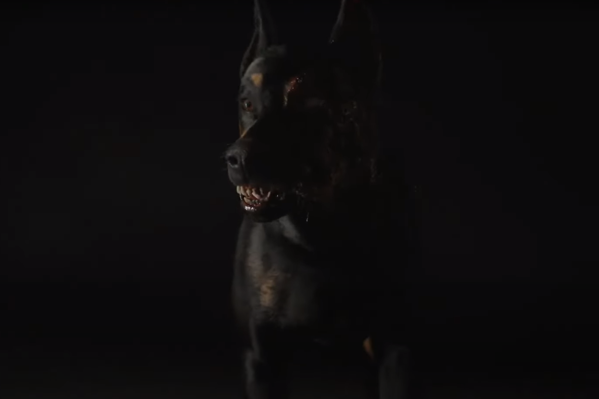

Выбор 1: Приблизиться к источнику звука, чтобы выяснить, кто там.
Алексей, полон любопытства, решил приблизиться к источнику звука.
Он медленно двигался по узкому переулку и заметил большую собаку, лежащую на земле и издающую тихие звуки.
Собака выглядела истощенной, но в её глазах светился голод.
Алексей хотел отступить, но вдруг животное подняло голову и с рычанием сделало шаг к нему.
Страх охватил его, и он попытался развернуться, но было уже поздно.
Собака бросилась на него, и в одно мгновение Алексей понял, что его приключение обернулось кошмаром.
Вскоре его испуганный крик разнесся по переулку, а собака стремительно приблизилась, поглощая его страх. (Смерть)
